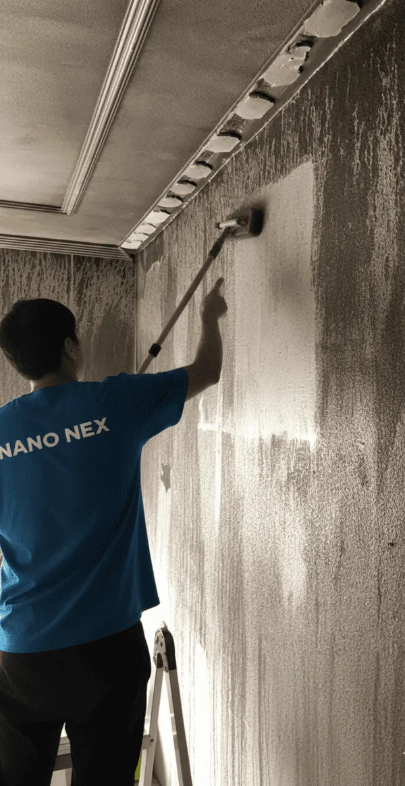

Cómo eliminar el olor a humo en casa

Para eliminar el olor a humo de raíz: primero retira el hollín de todas las superficies con aspiración HEPA (sin frotar en seco). Luego lava o desecha textiles muy impregnados. Finalmente, aplica un tratamiento profesional de ozono que oxida y destruye las moléculas de olor penetradas en los poros, armarios y conductos de aire. Los ambientadores solo enmascaran el olor unas horas. Disponible 24/7. Presupuesto gratis.
Hablemos claro: el olor a humo es lo más traicionero de un incendio. El fuego se ve, el hollín se ve… pero el olor es invisible y, encima, es cabezón como él solo. Pasan los días, parece que se va, y un día de calor o de humedad vuelve a aparecer como si tal cosa. ¿Le suena? Pues vamos a explicarle por qué pasa y cómo se le pone fin de una vez.
¿Por qué el olor a humo no se va solo?
Porque las partículas de la combustión son diminutas y se meten donde no llega la mano: en los poros de la pared, en la madera, en el relleno del sofá, dentro de los armarios, en el colchón… El humo no se queda en la superficie, se infiltra. Por eso usted limpia lo que ve, y el olor sigue ahí, agazapado.
Mire, el ambientador no elimina el olor: lo disfraza. Es como echar colonia en lugar de ducharse. Dura un rato y vuelta a empezar.
Métodos comparativos: DIY vs. Profesional
| Método | Tiempo | Costo aproximado | Efectividad |
|---|---|---|---|
| DIY (Aireación + bicarbonato) | 2-4 semanas | 10-30 euros | Baja (olor residual) |
| Profesional (Ozono) | 3-7 días | 300-800 euros | Muy alta (definitiva) |
| Profesional (Ozono + limpieza) | 5-10 días | 500-1200 euros | Muy alta (total) |
Lo que sí puede hacer usted (y ayuda)
- Ventilar a conciencia, varias veces al día, creando corriente.
- Lavar todos los textiles que se puedan: cortinas, fundas, ropa, sábanas.
- Tirar lo muy impregnado que no tenga arreglo (espumas, almohadas viejas).
- Colocar bicarbonato o carbón activo en cuencos por la casa: absorben algo, aunque no hacen milagros.
Esto rebaja el olor, pero —se lo digo de corazón— rara vez lo elimina del todo cuando el incendio ha sido serio.
Lo que de verdad acaba con el olor: el ozono
Aquí está la madre del cordero. El tratamiento con ozono es el que de verdad neutraliza el olor a humo. ¿Cómo? El ozono (O₃) es un oxidante potente que reacciona con las moléculas malolientes y las destruye, no las tapa. Llega al aire, a los poros, al interior de los armarios y de los tejidos, justo a donde usted no puede.
¿Cómo se hace, paso a paso?
- Primero se limpia el hollín de todas las superficies (sin esto, el ozono no basta).
- Se cierra la estancia y se colocan los generadores de ozono.
- Se deja actuar el tiempo necesario (de unas horas a un par de días, según el caso) sin personas ni mascotas dentro.
- Se ventila y se comprueba que el olor ha desaparecido.
Un apunte de seguridad importante: el ozono no se usa con gente o animales en la habitación. Por eso conviene dejarlo en manos de profesionales con el equipo adecuado.
¿Y si el olor está por todo el edificio?
Pasa, sobre todo en pisos antiguos con patios estrechos. El humo sube y se cuela en los rellanos y en casa de los vecinos. En esos casos tratamos también las zonas comunes. Si vive en Madrid, échele un ojo a nuestras páginas de Chamberí o Tetuán, donde esto es muy habitual.
Conclusión: limpie, ventile, lave… y para el remate, ozono. Así su casa no huele "a menos humo": huele a casa.
¿Por qué el olor vuelve cuando sube la temperatura?
Esto desconcierta a mucha gente, y con razón. Pasan dos semanas, parece que el olor se fue… y un día de calor, o al encender la calefacción, vuelve como si nada. ¿Magia negra? No. Las partículas de la combustión que quedaron incrustadas en los poros se reactivan con el calor y la humedad: se "despiertan" y vuelven a soltar olor. Por eso la limpieza superficial engaña: parece que ha funcionado hasta que aprieta el termómetro.
El ozono llega donde el trapo no llega
La gracia del ozono está justo ahí: como es un gas, se mete en el poro, en el hueco del armario, en el relleno del sofá y en la fibra de la cortina, exactamente donde se esconden esas partículas. Y no las tapa: las oxida y las rompe. Por eso, cuando el tratamiento se hace bien, el olor no "vuelve con el calor", porque ya no queda nada que se pueda despertar.
- Textiles y tapicerías: el ozono penetra donde el lavado no llega.
- Armarios y cajones cerrados: esos focos de olor persistente que parecen no irse nunca.
- Sistemas de ventilación y conductos: donde el humo se acumuló sin que usted lo viera.
Preguntas frecuentes
¿El ambientador elimina el olor a humo?
No. Los ambientadores solo enmascaran el olor a humo entre 2-4 horas, y luego vuelve a aparecer. Para eliminarlo de raíz necesitas dos pasos: primero limpiar completamente el hollín adherido a superficies, y luego aplicar un tratamiento profesional de ozono que oxida las moléculas de olor incrustadas en los poros, textiles y sistemas de ventilación. El ozono es la única solución definitiva.
¿Cuánto tarda el tratamiento de ozono?
El tiempo depende del volumen y la intensidad del olor. En viviendas pequeñas (< 100 m²) tarda entre 4-8 horas. En viviendas medianas (100-200 m²) entre 12-24 horas. En pisos grandes o locales comerciales puede tardar 2-3 días. Después hay que ventilar bien (2-4 horas) antes de entrar. Disponemos de tratamientos urgentes en 24h.
¿Es peligroso el ozono?
El ozono es completamente seguro si lo aplican profesionales certificados. Se realiza sin personas, niños ni animales domésticos en la estancia, y después se ventila bien para disipar el gas residual. El ozono (O₃) se descompone naturalmente en oxígeno ordinario en pocas horas. Nunca debe entrar mientras se está aplicando, pero después es totalmente seguro. Disponible 24/7.